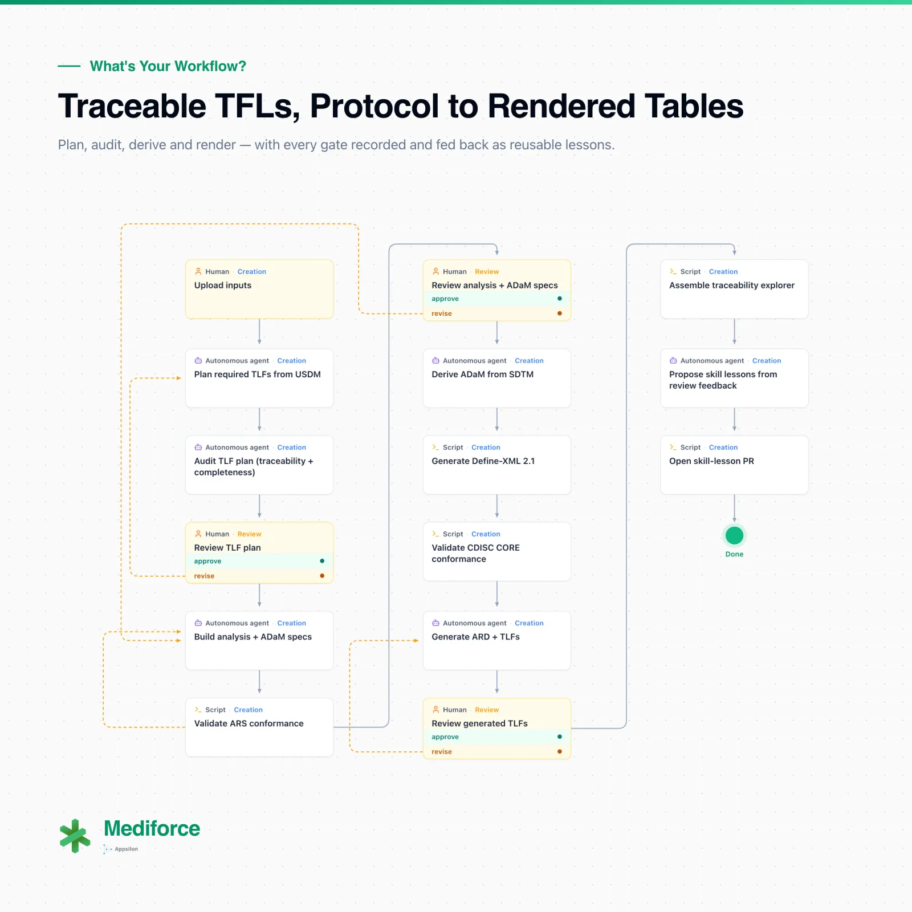

From USDM metadata and SDTM datasets to rendered tables, figures and listings, with a traceability graph you can query and three human gates where being wrong costs the most.
Scripts, agents and people each take the part they're best at. Click the diagram to see it full size, or read the full write-up on the Appsilon blog.

In most organisations, traceability means the documentation exists, and the chain can be rebuilt if someone follows it carefully enough.
Reconstructing the chain from a table back to its source is manual and late, and it only works if the documentation and the code agree with each other.
When a spec and its code disagree, you find out in QC long after the divergence crept in, and then someone has to work out which of the two was right.
Does every study objective have a deliverable answering it? Usually a person reads the TFL shell list against the protocol and hopes nothing was skipped.
A reviewer corrects one deliverable and the lesson ends there, so the next study runs into the same problems.
Each step goes to the kind of executor that suits it, and nothing moves past a human gate until a named person approves.
The run starts from the study's USDM metadata and its SDTM datasets.
Working from the USDM metadata, an agent identifies every table, figure and listing the study is going to need.
A second agent checks that plan for completeness and traceability, flagging gaps before anything gets built. One agent checks the other's work.
A person confirms the study will produce what it needs to, before any specs are written.
ARS-aligned analysis specs and ADaM specs, both drawn from the approved plan, then reviewed by a person.
ADaM datasets are derived from SDTM, Define-XML 2.1 is generated, the ARS schema is validated and CDISC CORE runs its checks. Deterministic scripts, no agent.
Analysis Results Data, then the tables, figures and listings themselves.
A final review of what was rendered, with every decision recorded.
Comments from the human gates become reusable skill lessons, opened as pull requests. Each run improves through a reviewed change, never a silent one.
Each run produces an interactive explorer that links every objective and endpoint to the TFLs answering it, each TFL to the ADaM datasets behind it, and each dataset to its SDTM sources. Click a table for its output, its results data and the code that made it. Anything missing or unclear is flagged, not left for you to notice.
Programmers get a second view, ADaM variable lineage: pick any variable and see the SDTM columns feeding it, the code that builds it and every output that uses it. When a spec says one thing and the code does another, such as an end date taken from the wrong domain, the explorer shows it during the run instead of in QC weeks later.
Every run keeps two separate records. The step log holds every tool call an agent made, in order, for whoever needs to understand what a step did. The audit log records who did what and when, with the exact inputs and outputs of each event, structured to ALCOA+ so it's ready for inspection as written.
We'll show you the platform and its workflows, and tailor them to how your team works.
Talk to Our Experts